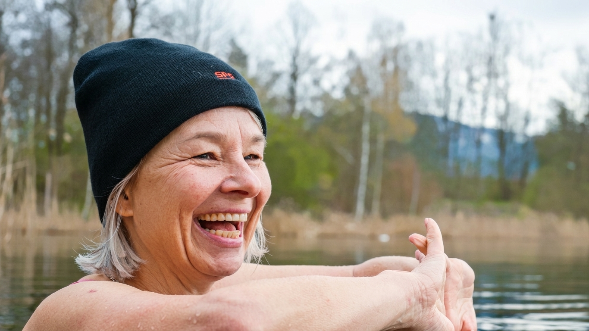
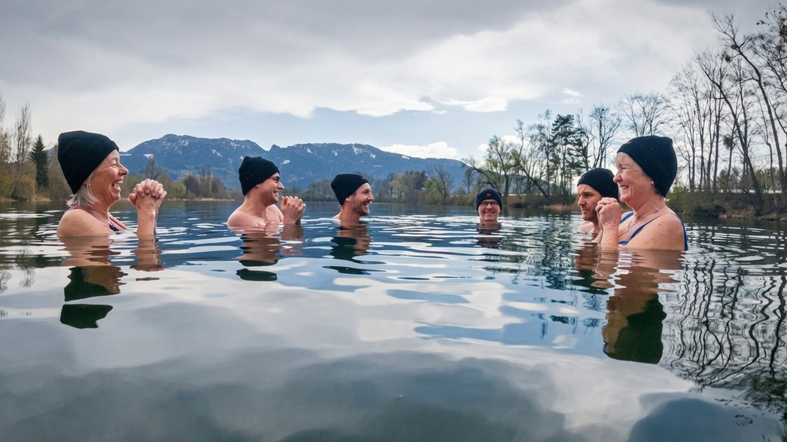
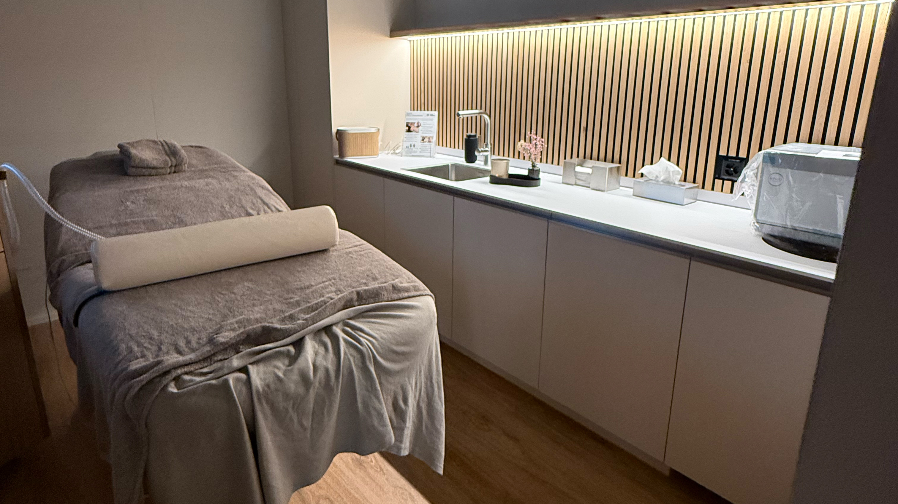
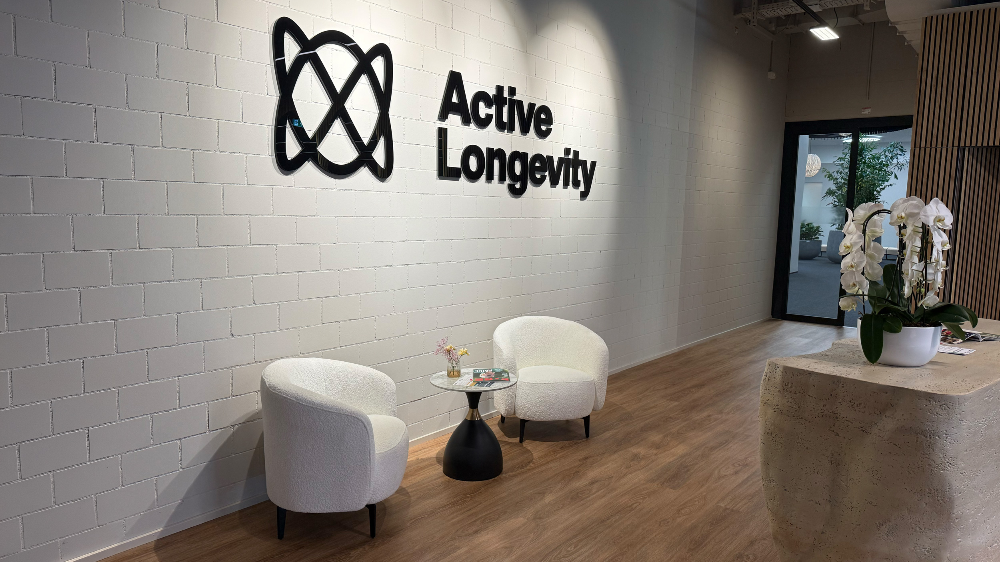

Anmoderation
Ein Feature über den Longevity-Boom und die Kunst, gesund zu altern.
Projekt Healthspan: Wenn Altern zum Geschäftsmodell wird
Während die Medizin früher vor allem Krankheiten heilte, will der neue Megatrend «Longevity» das Altern selbst verlangsamen. Doch was bringt der Hype um Eisbaden und High-Tech-Zellen wirklich? Ein Blick auf die Grenze zwischen wissenschaftlicher Revolution und geschicktem Marketing.

Eiskaltes Wasser
Der Sprung ins kalte Wasser
Dagmar Blank, von allen nur Dagi genannt, zögert nicht lange. Wenn andere gemütlich zu Mittag essen, geht sie mit einer Gruppe von Arbeitskolleg:innen über den Mittag ins eiskalte Nass. Mit einer Mütze auf dem Kopf und Badekleidung steigt sie langsam in den Alten Rhein. Nur sie gegen die innere Stimme, der Kälte entfliehen zu wollen.
Eisschwimmen – so funktioniert es

Dagi ist 60 Jahre alt, arbeitet im Büro und achtet bewusst auf ihre Gesundheit. Für sie beginnt Prävention nicht in einer Spezialklinik, sondern im Alltag. Neben dem Eisbaden bewegt sie sich viel an der frischen Luft: zu Fuss, auf dem Pferd oder auf dem Rad.
Was Dagi intuitiv spürt, wird in der Forschung als Hormesis bezeichnet – das Prinzip, bei dem ein kurzer, heftiger Stressreiz die Widerstandskraft des Körpers stärkt. Laut Studien im European Journal of Applied Physiology schiesst dabei der Noradrenalin-Spiegel im Blut um bis zu 530% nach oben, was den Fokus schärft und die Stimmung hebt.
Doch die Grenze zwischen biologischem Nutzen und dem Longevity-Hype ist schmal. Während Befürworter von sofortiger Entzündungshemmung sprechen, mahnt das Schweizer Ärztejournal VSAO zur Sachlichkeit: Tatsächlich steigen die Entzündungswerte unmittelbar nach dem Bad erst einmal an – ein Zeichen für die massive Arbeit, die der Stoffwechsel leisten muss, statt einer sofortigen Heilung.
Genau hier liegt die Spannung: So wie Dagi am Rheinufer durch persönliche Disziplin versucht, ihre Selbstheilungskräfte zu aktivieren, so sucht heute auch eine ganze Industrie nach Wegen, das Altern biologisch zu überlisten. Was bei Dagi als individuelles Mindset beginnt, mündet in einem globalen Forschungsfeld, das die Grenze zwischen natürlichem Verfall und technologischer Optimierung neu auslotet. Doch wie lässt sich dieses Streben nach ewiger Vitalität medizinisch begründen – und wo beginnt die blosse Vermarktung der Hoffnung?
Wissenschaft statt Anti-Aging
Was früher als «Anti-Aging» in Kosmetikregalen zu finden war, wird heute als «Longevity-Medizin» professionalisiert. Dr. Natalia Trpchevska, wissenschaftliche Leiterin in der klinischen Einrichtung für Präventionsmedizin «AYUN», definiert den Trend als Versuch, die «Healthspan» zu verlängern – also die Lebensjahre, die ein Mensch bei guter Gesundheit und frei von chronischen Schmerzen verbringt. Im Zentrum stehen dabei biologische Mechanismen wie chronische Entzündungen oder die zelluläre Seneszenz: Dabei stellen Zellen ihre Teilung ein, senden aber weiterhin entzündungsfördernde Stoffe aus, die das umliegende Gewebe schädigen können.
Doch während die Branche oft mit komplexen Hightech-Lösungen wirbt, rückt die Wissenschaft die Eigenverantwortung in den Fokus. Eine aktuelle Analyse der AOK zur präventiven Langlebigkeit untermauert dies: Demnach bestimmen die Gene lediglich 10 bis 30 Prozent des Alterungsprozesses. Der überwiegende Rest bleibt durch Faktoren wie Ernährung, Bewegung und soziale Interaktion direkt steuerbar. Gerade weil der Markt derzeit schneller wächst als die klinische Evidenz, ist diese Abgrenzung zwischen unveränderbarer Biologie und tatsächlicher Lebensführung zentral.
Das Mindset der Profis
Nejc Hojc, ehemaliger Handball-Profisportler und heute Inhaber von «Active Longevity», sieht Longevity vor allem als eine proaktive Haltung. «Für uns ist Longevity kein Trend, sondern in erster Linie ein Mindset», sagt er.
Philosophie eines Profisportlers
Hojc stützt sich dabei auf drei Grundpfeiler: Training, Ernährung und Schlaf. Für ihn ist Longevity die Chance, jenen fünf chronischen Leiden vorzubeugen, an denen heute 80 bis 90 Prozent der Menschen sterben: Herz-Kreislauf-Erkrankungen, Krebs, Demenz, Diabetes Typ II sowie degenerative Erkrankungen des Bewegungsapparats. Er warnt davor, den zweiten Schritt vor dem ersten zu tun. Für ihn sind High-Tech-Gadgets nur das «Topping» auf einer Torte, deren Boden aus harter Arbeit und Disziplin besteht.
In der Forschung wird das Ziel, das Hojc hier beschreibt, als «Compression of Morbidity» bezeichnet: Es geht darum, die Phase der Krankheit am Ende des Lebens so weit wie möglich hinauszuzögern und zu verkürzen, um bis kurz vor dem Tod eine hohe Lebensqualität zu erhalten.
High-Tech gegen den biologischen Zerfall

Während Nejc Hojc das Fundament im Lebensstil sieht, geht Uwe Brodda, Therapieleiter im «Longevity Center 108», einen Schritt weiter in Richtung Technologie. In seinem Zentrum kommen Geräte zum Einsatz, die auf Energie, Schwingung und Frequenz basieren – ein Feld, das die klassische Medizin oft kritisch beäugt, in der Longevity-Szene aber als «Medizin der Zukunft» gilt.
Wo Longevity wirklich ansetzen sollte nach Brodda
Dieser Rückgriff auf die Quantenphysik wird von der akademischen Forschung oft als Pseudowissenschaft kritisiert, da subatomare Gesetze nicht ohne Weiteres auf komplexe biologische Organismen übertragbar sind. Einen seriösen Anker findet die Idee der Schwingung lediglich in der Photobiomodulation (Lichttherapie): Studien im Fachjournal AIMS Biophysics belegen, dass spezifische Lichtwellen die Mitochondrien stimulieren können, um die Zellenergie (ATP) zu fördern.
Jenseits der Biologie spielt jedoch ein weiterer wissenschaftlicher Faktor eine Rolle: der Placebo-Effekt. Wenn Klienten fest an die Wirkung der Hightech-Verfahren glauben, kann allein die Erwartungshaltung neurobiologische Reaktionen auslösen, die das Wohlbefinden steigern. Dennoch fehlen für Broddas Vision einer systemischen Heilung durch «Schwingung» bisher die klinischen Langzeitstudien. Kritiker sehen in solchen Verfahren daher oft teure Placebos, die den technologischen Hype nutzen, ohne eine verifizierte Wirkung auf den gesamten Alterungsprozess zu bieten.
Zwischen Heilversprechen und Marketing
Doch wo viel Hoffnung ist, fliesst auch viel Geld. Nahrungsergänzungsmittel, Blutanalysen, Wearables, Spezialtests und exklusive Programme versprechen, den Körper messbar zu optimieren. Dr. Trpchevska warnt jedoch vor einem der grössten Missverständnisse im Feld: der Vorstellung, es gebe eine einzelne Intervention oder gar eine «Wunderpille», die Altern grundlegend aufhalte. Fortschritt entstehe schrittweise und basiere auf belastbarer Evidenz, nicht auf möglichst spektakulären Versprechen.
Auch für Nejc Hojc ist Longevity kein Ziel, das man mit einer schnellen Investition erreicht, sondern ein lebenslanger Prozess. Er betont, dass es keine Abkürzung gibt: Wer Fortschritte sehen will, muss bereit sein, über Jahre hinweg konsequent Zeit und Energie in die eigene Gesundheit zu investieren. Teure Produkte oder Gadgets können die Basis aus Disziplin und einem gesunden Lebensstil niemals ersetzen. Longevity bedeutet für ihn deshalb vor allem, Verantwortung für den eigenen Körper zu übernehmen, statt passiv auf die eine technologische Entdeckung zu warten, die den biologischen Zerfall über Nacht stoppt.

Die Zukunft: Ein Privileg für Reiche?
Ein kritischer Punkt bleibt: Longevity-Kliniken und spezialisierte Diagnostik sind teuer. In der Forschung wird daher zunehmend gefordert, dass Langlebigkeit zu einem Thema der öffentlichen Gesundheit werden muss. Die wichtigsten Säulen – Bewegung, Ernährung und Schlaf – sollten strukturell für alle gefördert werden, damit präventive Medizin nicht nur ein Privileg für Kunden von «Boutique-Kliniken» bleibt.
Fazit: Es gibt nicht die eine Lösung
Am Ende der Reise durch Labore, Trainingszentren und eiskalte Flüsse bleibt die Erkenntnis: Longevity ist kein geschlossenes Konzept, sondern ein Feld voller Spannungen.
Während die einen in der genetischen Analyse und Frequenztherapie den Schlüssel zur Unsterblichkeit suchen, mahnen andere zur Rückbesinnung auf das Wesentliche. Die Wissenschaft liefert zwar immer präzisere Daten, doch die Interpretation bleibt umstritten. Ist das Altern eine Krankheit, die man heilen kann, oder ein natürlicher Prozess, den wir lediglich würdevoll begleiten sollten?
Abmoderation
Transkription der Audios
Anmoderation
Moderation: «Stellen Sie sich vor, es ist klirrend kalt. Sie stehen am Ufer des Alten Rheins und bereiten sich darauf vor, in das eisige Wasser zu steigen. Für die meisten ein Albtraum, für Dagi ist es geleitete Gesundheitsvorsorge. Sie ist Teil einer wachsenden Bewegung, die das Altern nicht mehr als schicksalhaftes Verfallen akzeptiert, sondern als einen Prozess, den man aktiv gestalten kann.
Eisschwimmen – so funktioniert es
«Wir gehen langsam, in Badekleidung und mit Mütze auf dem Kopf ins Wasser, und bleiben stehen, wenn das Wasser über Brusthöhe ist. Wir gehen langsam, ohne anzuhalten, atmen tief und ruhig und lassen das kalte Wasser auf uns wirken. Die Hände haben wir nicht unter Wasser, sondern wir halten sie über Wasser. Es ist wichtig, die erste Minute durchzuhalten. Danach gewöhnt sich der Körper daran bzw. arbeitet so, dass es gut erträglich ist. Wichtig ist, langsam zu beginnen und nicht zu lange im Wasser zu bleiben. Auch bei geübten ist die max. Minutenanzahl im Wasser die Temperatur, also max. 5 Min. bei 5 Grad Wassertemperatur. Wenn man wieder rauskommt, ist die Haut sehr rot, aber man merkt, wie der Körper und die Durchblutung arbeitet. Man fühlt sich danach einfach gut.»
Philosophie eines Profisportlers
«Meine Philosophie im Leben ist: Wenn etwas wichtig ist, musst du dementsprechend Energie, Zeit und Ressourcen in das investieren.»
Wo Longevity wirklich ansetzen sollte nach Brodda
«Das ist die Medizin der Zukunft. Dass du nicht erst behandelst, wenn das Kind in den Brunnen gefallen ist, sondern wirklich frühzeitig anfängst. Wir arbeiten in der Quantenphysik mit Informationen und Energie, um die Zellen wieder in die richtige Schwingung zu bringen.»
Fazit: Es gibt nicht die eine Lösung
Es gibt keine abschliessende Antwort darauf, worin die Zukunft der Gesundheit liegt. Ob in einer App, einer Kältekammer oder schlicht in der Disziplin des Alltags – das bleibt offen. Die Grenze zwischen revolutionärer Vorsorge und geschicktem Marketing fliesst so unaufhörlich, wie das Wasser des Alten Rheins.